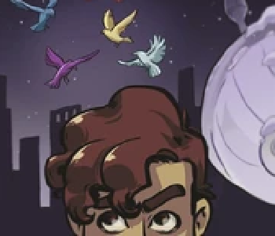
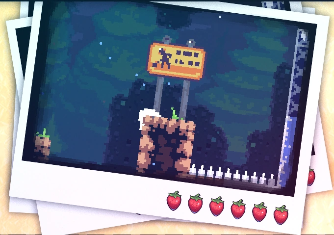
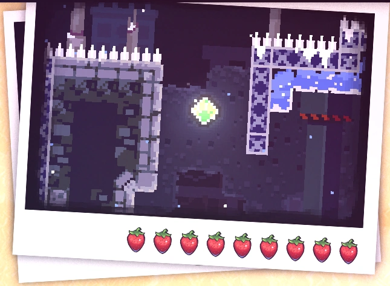
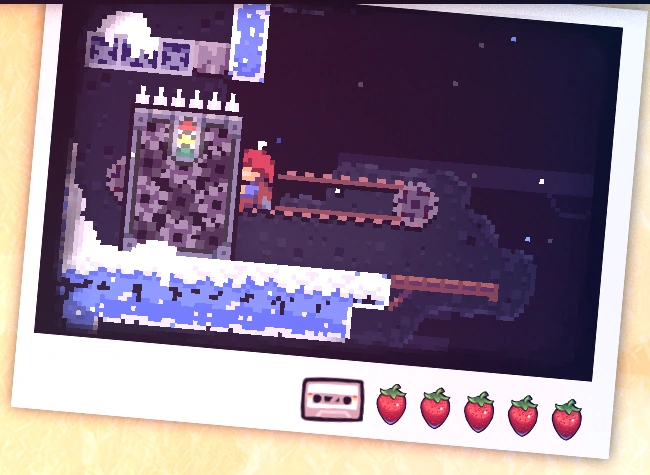

Chapter 1: Forsaken City
Forsaken City is the first chapter of Celeste. The chapter has an easy level design so that the player gets used to the game mechanics.
Mecânicas
Plot
Cidade Abandonada introduz 1 nova personagem:
• Theo.
O prólogo começa com Madeline mentalmente se encorajando a seguir com sua jornada. Seguindo, Madeline encontra um pássaro que ensina a ela como escalar. Após isso, Madeline encontra um mulher idosa com quem pede direções. A idosa debocha de Madeline e avisa sobre os perigos da montanha, mas Madeline a julga como lunática e continua com seu caminho. Logo em seguida, Madeline passsa por uma ponte que colapsa enquanto ela a atravessa, fazendo Madeline começar a cair. Porém, o pássaro ensina Madeline sobre o dash, salvando-a. Madeline chega no chão e se encoraja novamente, assim terminando a fase.
Diálogos
Theo: Ho there, fellow traveller!
Madeline: Oh... hi.
Theo: What a killer night for a hike!
Madeline: I guess so.
Theo: This place is so crazy. I kind of can't believe it exists!
Madeline: Not the easiest climb, is it? But I guess that's what I was looking for...
Theo: Whoa, that sounds pretty serious. I'm just happy to see another human in such a lonely place. I'm Theo by the way, an adventurer from a far-off land!
Madeline: ...
Theo: Not much of a talker, are you? Mysterious lone wolf type, I get it. I'll just imagine some dark backstory for you.
Madeline: Hey, sorry. I'm Madeline.
Madeline: I've got a lot on my mind.
Theo: Well, Madeline, I'd say you've come to the right place! I'm freezing my toes off, but I can't imagine a better place to be for some quiet reflection.
Madeline: Yeah, maybe you're right. What "far off land" do you hail from?
Theo: Well, my inquisitive compatriot, I doth hail from the mystical, exotic kingdom of... Seattle.
Madeline: It sounds like a special place.
Theo: This place is wild! Why would an entire city be abandoned?
Madeline: I read that some mega-corporation started building it, but then no one wanted to live here. I wonder why...
Theo: My money's on a government cover-up.
Madeline: What a waste, to build all of this for no reason...
Theo: At least we get to enjoy the leftovers.
Madeline: Are you here to explore this city?
Theo: Yeah, I have a thing for abandoned places. And I like to think of myself as a budding photographer.
Madeline: Oh really? Cool! Do you have a blog or something?
Theo: A blog?
Madeline: Theo.
Theo: Oh, right. I'm TheoUnderStars, look me up!
Theo: This terrain is pretty tricky, are you turning back soon?
Madeline: Nope. I'm heading for the summit.
Theo: I can really see the determination in your eyes! It's inspiring.
Madeline: If you say so. I bet you could make it to the summit too.
Theo: Maybe. I don't really care about reaching the top, TBH. Oh! But I heard there are some legit old ruins up beyond the city. Like 1800's legit. I know it's risky but I have to see them for myself.
Theo: What's that thing you say right before you do something irresponsible?
Madeline: Uh... "throw caution to the wind?" No, that's not it. Oh right...
Theo: YOLOOOOOOOOO!!
Memorial: -- CELESTE MOUNTAIN -- This memorial dedicated to those Who perished on te climb
Coletáveis
Coração de cristal:
O coração de cristal do capítulo 1 é adquirido no segundo subcapítulo após acessar
uma passagem
secreta. Na sala do coração de cristal, existe um computador que pisca luzes coloridas em uma
ordem e alguns pássaros das mesmas cores do computador que avançam para diferentes direções.
Para conseguir o coração de cristal, é necessário usar o dash na direção dos pássaros na ordem
mostrada pelo computador. A ordem correta é:
• Cima (Branco),
• Esquerda (Roxo),
• Baixo-direita (Azul),
• Cima-direita (Vermelho),
• Esquerda (Roxo),
• Cima-esquerda (Amarelo).
- Veja: como encontrar...
Fita cassete:
A fita cassete do capítulo 1 é adquirida no terceiro subcapítulo após acessar uma passagem
secreta. Na sala da fita cassete, são encontradas plataformas rítmicas. Após alcançar o
objetivo, uma bolha transportara o jogador de volta para o começo da sala.
- Veja: como encontrar...

Morangos:
• Morango dourado:
Conseguido após concluir a fase enquanto segura o morango dourado. Só pode ser coseguido após concluir o lado B do capítulo 8.
• Morango dourado com asas:
Conseguido após concluir o capítulo 1 sem usar o dash nenhuma vez (o jogador pode usar por
acidente,
mas
se você passar para outra sala após usar o dash e não ter morrido, o morango desaparecerá).
- Veja: como encontrar...
• Morango vermelho:
Morango 1: Morango vermelho:
Morango 2: Morango vermelho:
Morango 3: Morango vermelo com asas:
Morango 4: Morango vermelho:
Morango 5: Morango vermelho:
Morango 6: Morango vermelho:
Morango 7: Morango vermelho:
Morango 8: Morango vermelho:
Morango 9: Morango vermelho:
Morango 10: Morango vermelho:
Morango 11: Morango vermelho:
Morango 12: Morango vermelho:
Morango 13: Morango vermelho:
Morango 14: Morango vermelho:
Morango 15: Morango vermelho:
Morango 16: Morango vermelho:
Morango 17: Morango vermelho:
Morango 18: Morango vermelho:
Morango 19: Morango vermelho com asas:
Morango 20: Morango vermelho
Subcapítulos
Cidade Abandonada possui 3 subcapítulos:
Início
Travessia
Abismo
